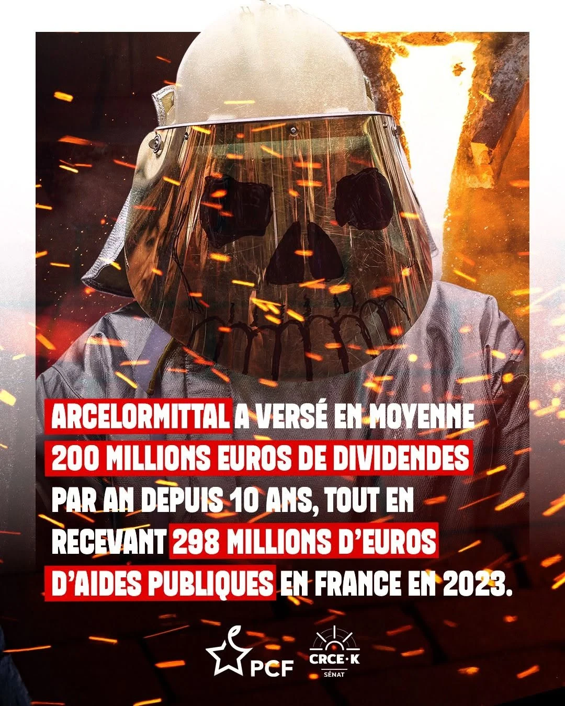

Publication relayée par le PCF 79
Le PCF revient sur les aides publiques et les dividendes d’ArcelorMittal
Date de mise à jour indiquée par Facebook · 23 février 2026
Texte de la publication · PCF national
📌 ArcelorMittal : profits privés, argent public !
ArcelorMittal aurait versé en moyenne 200 millions d’euros de dividendes par an à ses actionnaires depuis dix ans au niveau mondial.
Dans le même temps, en 2023 le groupe a bénéficié en France de 298 millions d’euros d’aides publiques dont :
➡️ 195 millions d’euros liés au prix de l’énergie
➡️ 41 millions d’euros d’allègements de cotisations sociales
➡️ 40 millions d’euros au titre du crédit d’impôt recherche.
Ces chiffres sont issus du rapport d’enquête parlementaire sur les 211 milliards d’euros d’aides publiques aux grandes entreprises dont le sénateur communiste
était rapporteur.
L’argent public ne peut plus continuer à financer les profits privés.
Reprenons la main collectivement sur nos industries stratégiques et notre souveraineté industrielle
🔴 La question de la nationalisation sera posée mercredi au Sénat, à l’initiative du groupe
.
Pour demander le conditionnement de ces 211 milliards d’aides publiques, signez la pétition en commentaire.

Sources
PCF national · publication relayée par le PCF 79 · bibliothèque Facebook · AR-0002-FB-00859
À lire aussi · ArcelorMittal. Le PCF réagit au rejet de la proposition de nationalisation au Sénat